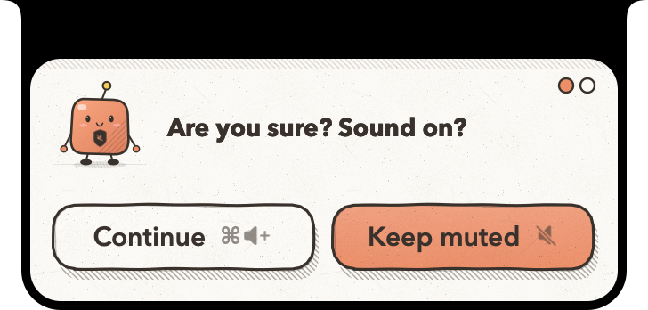
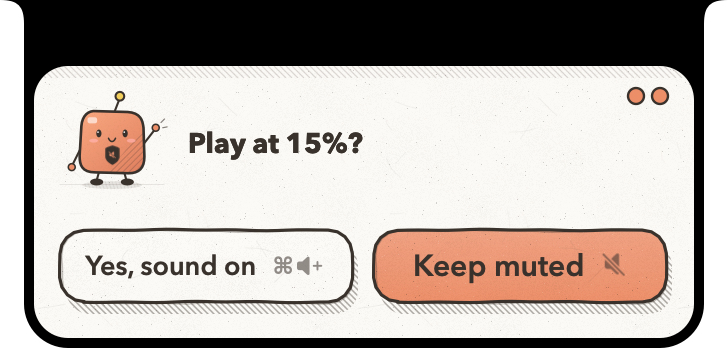
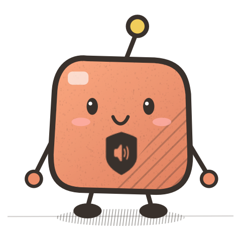
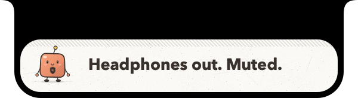
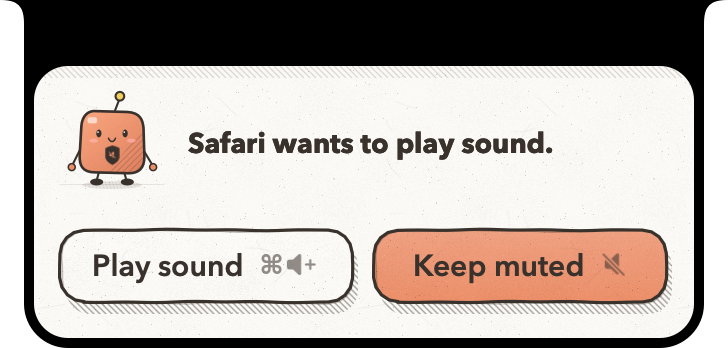
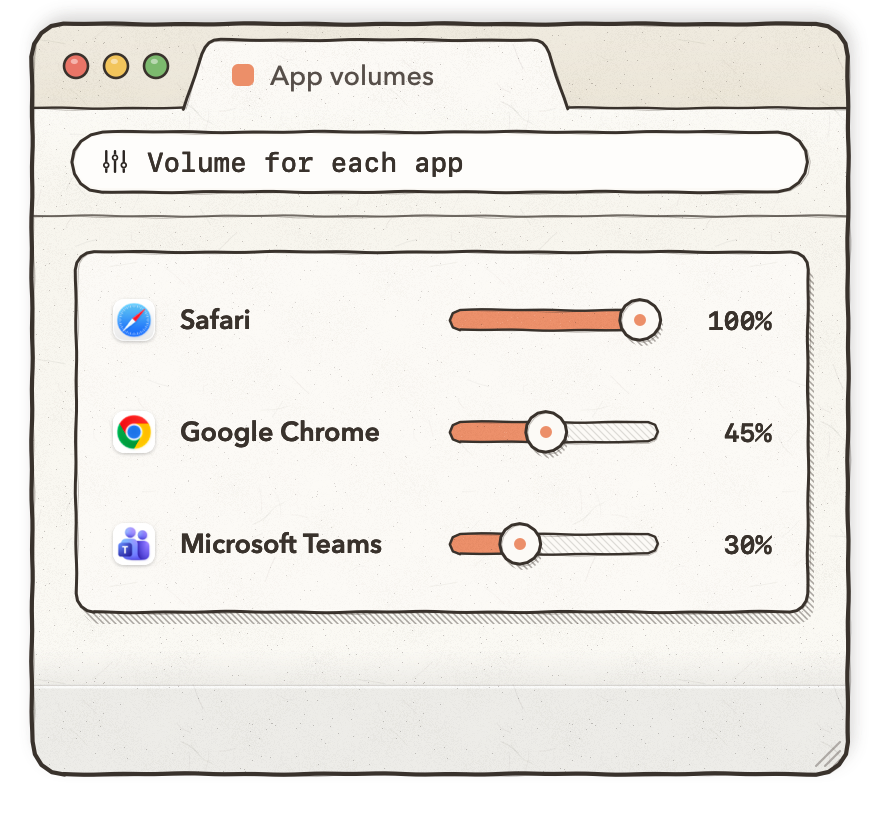
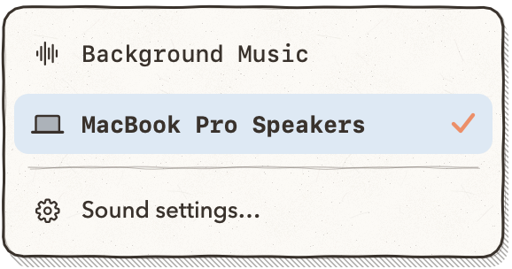
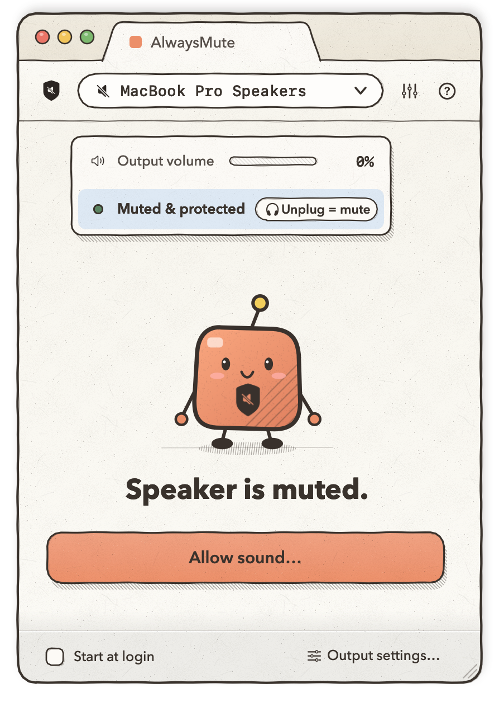
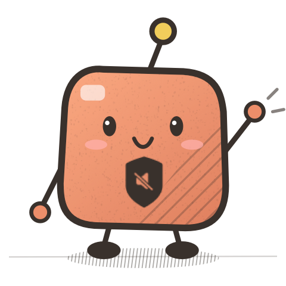

1
Press Volume Up
AlwaysMute drops down from the notch and asks if you're sure.
No more surprise sound in the library, the meeting or the quiet coach. When you want audio, AlwaysMute asks right from the notch, twice.
macOS 13 or later · No microphone, no network · Not on sale yet


Your volume keys do the talking. A stray keypress can't turn the speakers on: continuing always takes ⌘ held down.
AlwaysMute drops down from the notch and asks if you're sure.
It shows the exact starting volume before anything plays.
Sound is on, and stays on until you mute it. Changed your mind? Mute steps back.

Sound on!Pull out your headphones, or let them run out of battery, and your Mac mutes before the speakers can blast. It even overrides outputs you trust.

Once sound is on, the apps already playing keep playing. If another app starts making noise, AlwaysMute pauses it behind mute and asks first. One ⌘ + Volume Up lets it through.

Turn each app down on its own. AlwaysMute remembers the level and applies it every time that app plays. At 100%, an app is left completely alone.



macOS 13+ · Apple silicon · Ad-hoc signed, not notarized.
Installation instructions · Source on GitHub

AlwaysMute reacts to changes macOS reports, so a very short sound can slip out before it mutes. Hardware-controlled HDMI or AirPlay outputs and the startup chime are outside its reach. Naming the app that wants to play and per-app volume need macOS 14.2 or later; per-app volume also asks for permission to capture app audio, which never leaves your Mac.